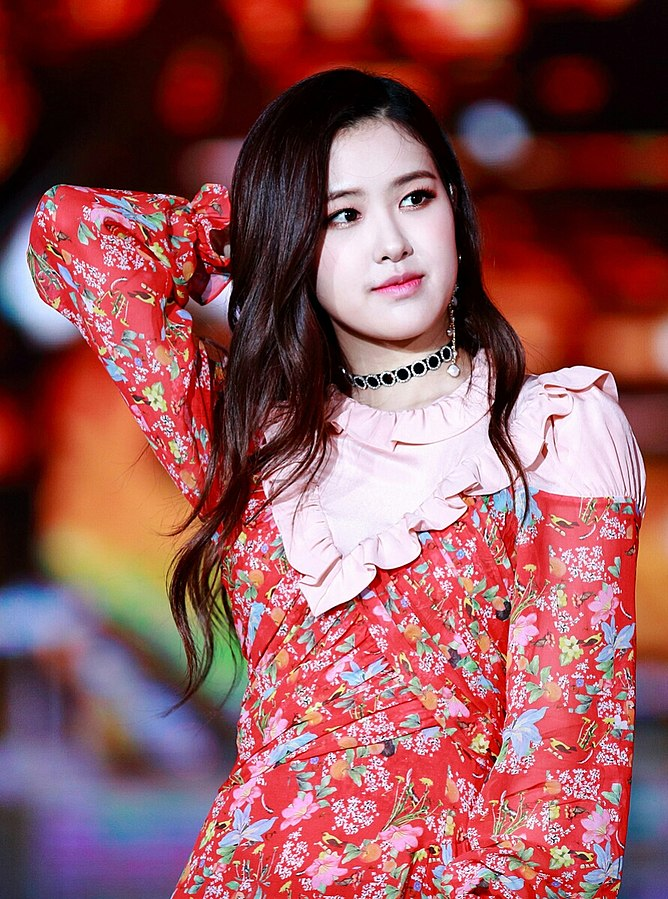

Black Pink (Hangul: 블랙핑크), ditulis bergaya sebagai BLACKPINK atau BLΛƆKPIИK, adalah sebuah grup penyanyi perempuan Korea Selatan yang dibentuk oleh YG Entertainment, terdiri dari para anggota seperti Jisoo, Jennie, Rosé, dan Lisa.
Grup ini debut pada tanggal 8 Agustus 2016, dengan single mereka berjudul Square One, yang menghasilkan "Whistle," lagu nomor satu pertama mereka di Korea Selatan. Single ini juga menghasilkan "Boombayah", single nomor satu pertama mereka di tangga lagu Billboard World Digital Songs, yang mendapat rekor sebagai video musik debut yang paling banyak ditonton oleh artis Korea. Dengan sukses komersial mereka di lima bulan pertama, mereka memperoleh New Artist of the Year di 31st Golden Disc Awards dan 26th Seoul Music Awards.
Black Pink merupakan artis K-pop perempuan yang mempunyai lagu di posisi tertinggi di Billboard Hot 100, berada di nomor 55 dengan "Ddu-Du Ddu-Du", dan di Billboard 200, berada di nomor 40 dengan EP berjudul Square Up. Mereka merupakan grup K-pop perempuan pertama dan satu-satunya yang memasuki dan memuncaki tangga lagu Emerging Artists Billboard. Mereka juga merupakan grup K-pop perempuan pertama yang mempunyai empat lagu di tangga lagu Billboard World Digital Song Sales. Di waktu yang sama saat rilis, "Ddu-Du Ddu-Du" memecahkan rekor sebagai video musik Korea yang paling banyak ditonton di YouTube dalam waktu 24 jam, sebelum dilewati oleh BTS dengan video mereka yang berjudul "Idol".
| NO. | IMAGE | BIODATA |
| 1 |
|
|
| 2 |
|
|
| 3 |  |
|
| 4 |
|